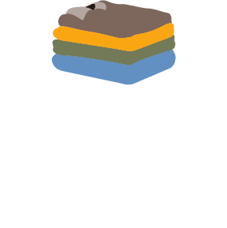

Logo
Reasoning
The Fits logo employs a series of stacked, colored layers representing various clothing items, establishing an immediate visual connection to wardrobe organization and outfit creation. The simplified stacking motif communicates the app's core functionality of helping users combine separate clothing pieces into cohesive outfits, while the earthy color palette (brown, yellow, green, and blue) represents common wardrobe colors that appeal to a broad audience. This approachable, practical design supports the overall purpose of the app by suggesting organization, versatility, and thoughtful combination—key elements in effective outfit planning and wardrobe management.
Typography
M PLUS Rounded 1c Bold 700
The M PLUS Rounded 1c Bold typography delivers a perfect balance of approachability and functionality that supports the app's purpose. The rounded terminals create a friendly, welcoming feel appropriate for an app dealing with personal style choices, while the geometric structure and bold weight ensure excellent legibility across different sizes and platforms. This typographic choice communicates both reliability and accessibility, essential qualities for an app that guides users through the sometimes overwhelming process of outfit selection. The clean, modern aesthetic of the typeface also suggests technological innovation while maintaining a warm, human-centered approach that aligns with the personal nature of fashion choices.
Character Examples
ABCDEFGHIJKLMNOPQRSTUVWXYZ
abcdefghijklmnopqristuvwxyz
1234567890
Variations
Light Mode
Dark Mode
Other Variations
Spacing and Favicons
Spacing
Favicons